Karten-Editor: Bauwerkzeuge
Ecken, Kanten und Flächen, der Clipper, CSG, Brush-Formen, Transformationen, Patches, Texturieren, Regionen, Filter, Ebenen und Modelle - die Werkzeuge von NetRadiant-Custom mit seinen Tasten, Menüs und Dialogen.
Ecken, Kanten und Flächen#
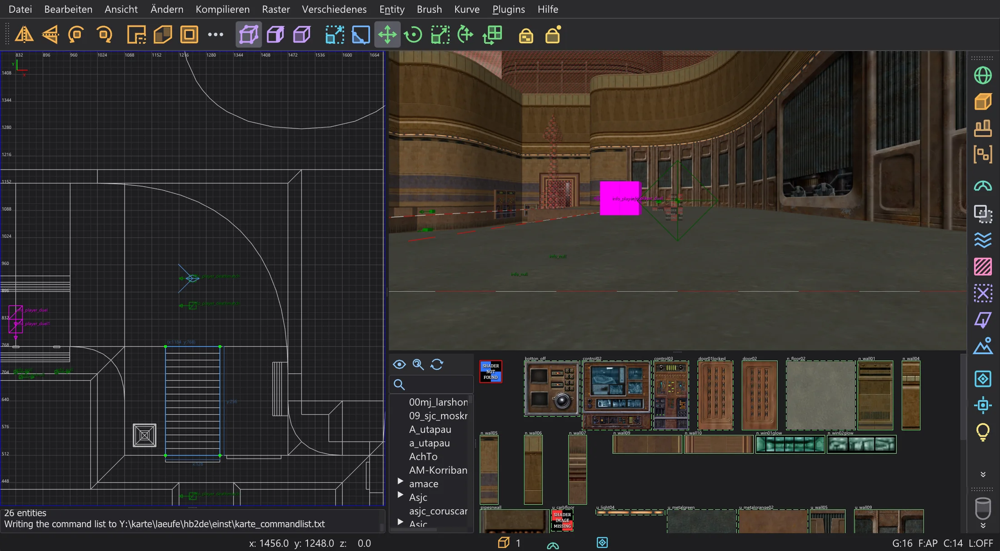
Wähle einen Brush oder Patch und drücke V (Ecken), E (Kanten) oder F (Flächen). Ein Klick wählt einen Punkt, Ziehen formt den Brush um; er wird wie in NetRadiant-Custom aus seinen Punkten neu gebaut. Dieselbe Taste noch einmal führt zur normalen Auswahl zurück. B ist das Build-Werkzeug (herausziehen, Ketten bauen, klonen), G das UV-Werkzeug für die Textur einer Fläche. Textur sperren (Umschalt+T) hält die Texturen fest, während du Brushes verschiebst.
Clipper#
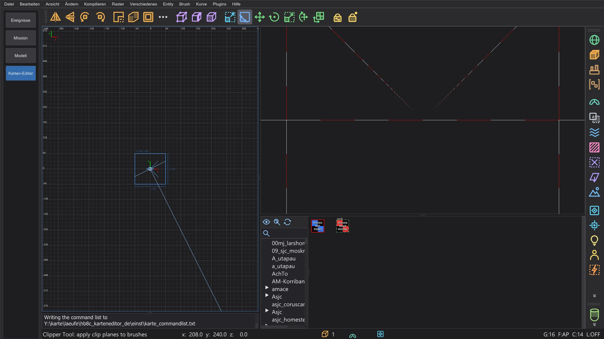
Wähle Brushes und drücke X. Bis zu drei Klicks in eine 2D-Ansicht oder auf Flächen in der Kamera legen die Schnittebene fest; die Punkte lassen sich verschieben. Enter schneidet und behält eine Seite, Umschalt+Enter teilt in beide Hälften, Strg+Enter dreht um, welche Seite bleibt. Ein Doppelklick schneidet oder teilt, wie auf der Einstellungsseite Clipper gewählt.
CSG#
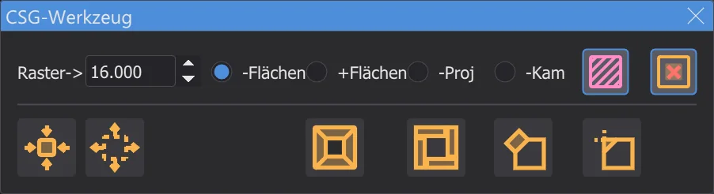
Brush > CSG: CSG Abziehen (Umschalt+U) schneidet die gewählten Brushes aus allem heraus, was sie berühren, CSG Vereinen vereint Brushes zu einem konvexen Brush, CSG Hülle vereinen (Strg+U) hüllt sie in einen, CSG Schnittmenge (Strg+Umschalt+U) behält nur den gemeinsamen Teil, Raum bauen macht aus einem Brush einen hohlen Raum. Detail machen (Alt+D) und Strukturell machen (Alt+S) setzen das Detail-Kennzeichen.
Brush-Formen und Transformationen#
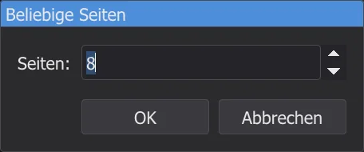
Brush macht aus dem gewählten Brush ein Prisma, einen Kegel, eine Kugel, einen Fels oder ein Ikosaeder; ein kleiner Dialog fragt nach der Zahl der Seiten. Strg+3 ... 9 machen ein Prisma mit so vielen Seiten um die Achse der aktiven 2D-Ansicht. Ändern dreht und spiegelt die Auswahl um ihre Mitte, Beliebig drehen (Umschalt+R) und Beliebig skalieren (Strg+Umschalt+S) nehmen genaue Werte. Transformationen wiederholen (Strg+R) wiederholt das letzte Verschieben, Drehen oder Skalieren, Transformationen zurücksetzen (Alt+R) vergisst es.
Patches#
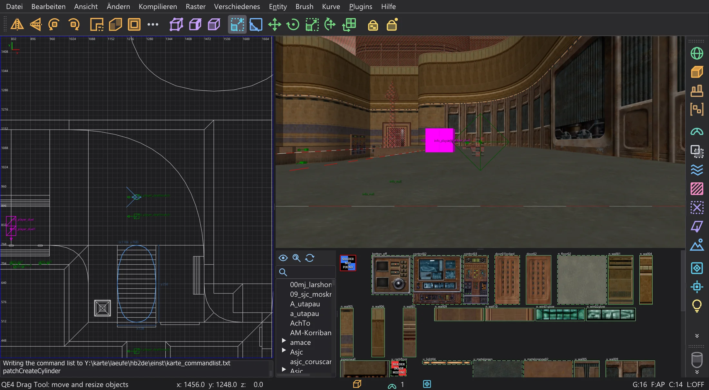
Das Menü Kurve baut Patches in den Grenzen der Auswahl: Ebene (Einfaches Patch-Netz, Umschalt+P), Fase, Endkappe, Zylinder, Kegel, Kugel und die exakten Formen mit einem Dialog für die Größe. Einfügen/Löschen fügt Zeilen und Spalten ein oder nimmt sie weg, Matrix kehrt um (Strg+I), transponiert (Strg+Umschalt+M), verteilt neu und glättet. Auswahl abdecken (Umschalt+C) schließt die Enden, Verdicken (Strg+T) gibt einem Patch eine Dicke, Verformen verformt zufällig. Die Textur eines Patches: Natürlich ausrichten (Strg+N), X und Y umkehren, zurücksetzen.
Texturieren#
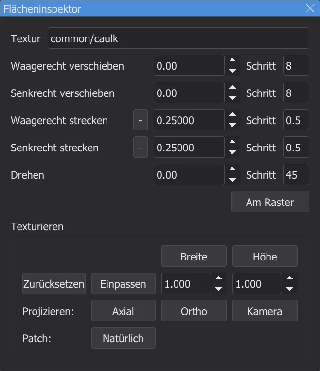
Der Flächeninspektor (S) zeigt die Textur der gewählten Flächen: Verschiebung, Skalierung und Drehung, die Schrittweiten der Pfeiltasten, Einpassen (Strg+F) und die Projektion (axial, ortho, von der Kamera). Ohne das Fenster verschieben Umschalt + Pfeiltasten die Textur, Strg + Pfeiltasten skalieren sie, Umschalt+Bild auf / Bild ab drehen sie. Gleich texturierte wählen (Strg+Umschalt+A) wählt alle Flächen mit der aktuellen Textur. Mit Schlagwörter bekommt der Texturbrowser Tags zum Sortieren der Texturen.
Auswahl, Regionen und Dateien#
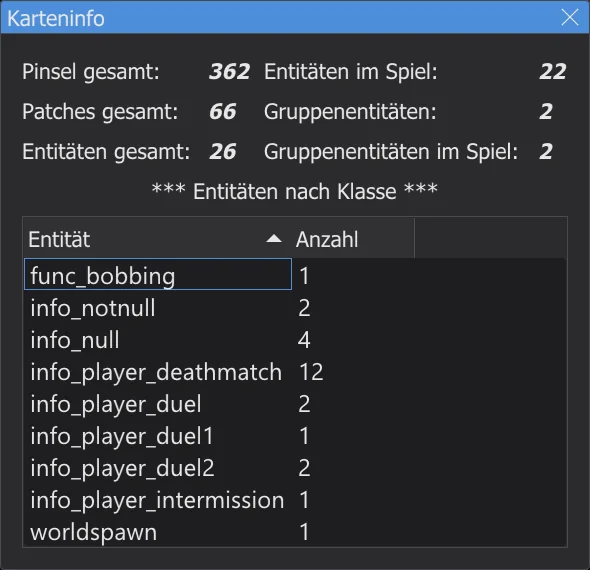
Innen liegende wählen und Berührende wählen wählen, was im gewählten Brush liegt oder ihn berührt. Ansicht > Region zeigt nur einen Teil der Karte: XY setzen (der sichtbare Bereich der 2D-Ansicht), Brush setzen, Auswahl setzen (Strg+Umschalt+R), Aus. Datei > Region speichern schreibt die Region mit Wänden ringsum und einem Startpunkt, Auswahl speichern nur die Auswahl, Importieren fügt eine andere Karte hinzu. Brush suchen wählt einen Brush nach Entity- und Brush-Nummer. Die Karte wird alle 15 Minuten von selbst gesichert (Einstellungsseite Autosicherung).
Filter#
Ansicht > Filter und die Filterleiste rechts blenden Arten von Objekten aus: World-Brushes (Alt+1), Entities, Caulk, Clips, Flüssigkeiten, Detail-Brushes, Patches, Lichter, Modelle, Trigger und mehr. Manche Knöpfe tun beim Rechtsklick etwas anderes, wie ihr Tooltip sagt: die Auswahl zu Detail oder Structural machen, eine func_group anlegen, Caulk oder eine Werkzeugtextur auftragen. Filter umkehren und Filter zurücksetzen kehren alle um oder schalten sie aus.
Ebenen#
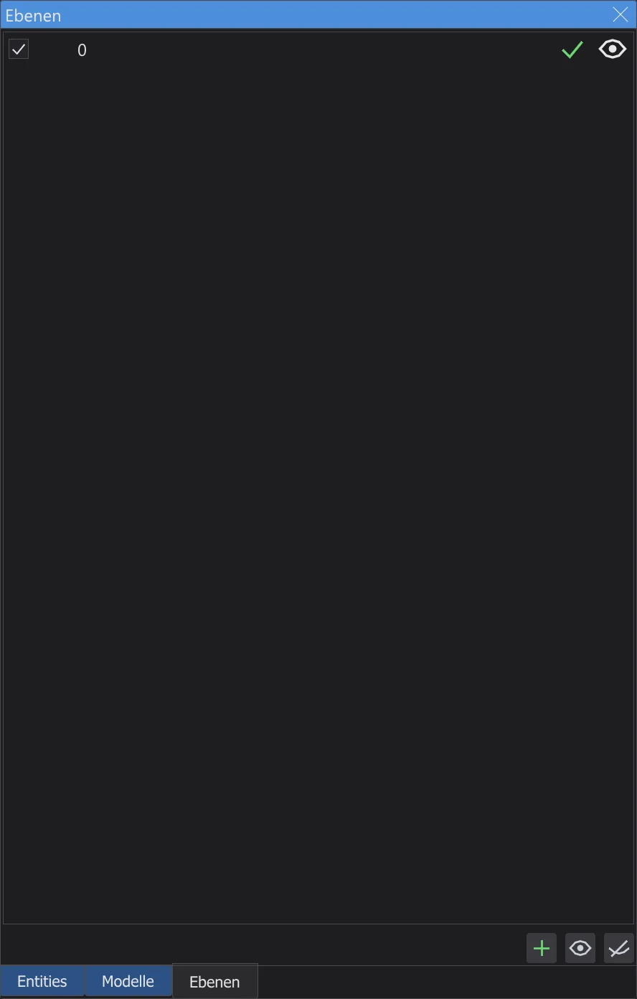
Ebenen fassen Teile der Karte zusammen. Im Ebenen (L) legst du Ebenen an, benennst sie um, verschachtelst sie durch Ziehen, blendest sie mit dem Auge aus und ein und verschiebst die Auswahl in eine Ebene (Umschalt+Q); Strg+Q erweitert die Auswahl auf ihre Ebenen. Neue Objekte kommen in die aktuelle Ebene. Die Ebenen stehen wie bei NetRadiant-Custom in der .map-Datei.
Modelle#
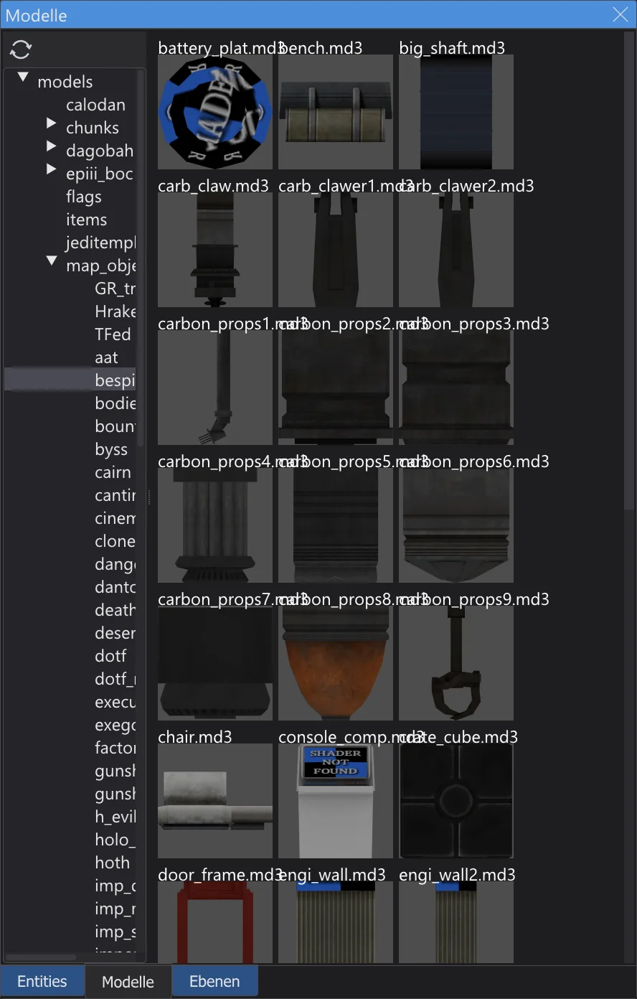
Entities wie misc_model zeigen ihr Modell (.md3, .glm, .ase) in beiden Ansichten, mit Skin, modelscale und Winkeln. Im Modellbrowser (/) lädt ein Doppelklick auf einen Ordner dessen Modelle; ein Klick auf ein Modell gibt es den gewählten Entities, ein Doppelklick setzt ein neues misc_model vor die Kamera. Modelle neu laden lädt die Modelle neu, wenn sie sich geändert haben.
Einstellungen#
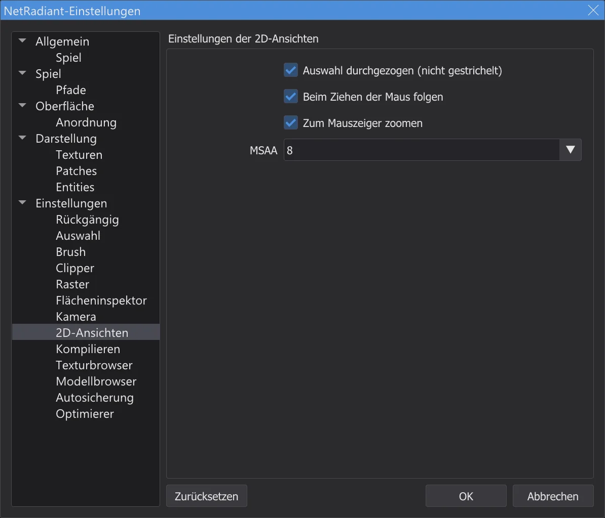
Alle Seiten der Einstellungen von NetRadiant-Custom wirken: Brush (Standard-Texturskalierung, Brush-Format neuer Karten, immer Caulk), Raster, Rückgängig, 2D-Ansichten (Auswahl durchgezogen oder gestrichelt, beim Ziehen am Rand der Maus folgen, zum Mauszeiger zoomen), Kompilieren, Einstellungen (nach dem Duplizieren verschieben, letzte Karte laden). Unter Spiel wählst du Jedi Academy oder Jedi Outcast, eine Mod und den Bearbeitungsmodus (Einzel- oder Mehrspieler-Entities), unter Pfade den Spielordner und bis zu fünf weitere Ordner. Ein anderes Spiel fragt nach einem Neustart des Karten-Editors, wie bei NetRadiant-Custom.
Menüs und Fenster#
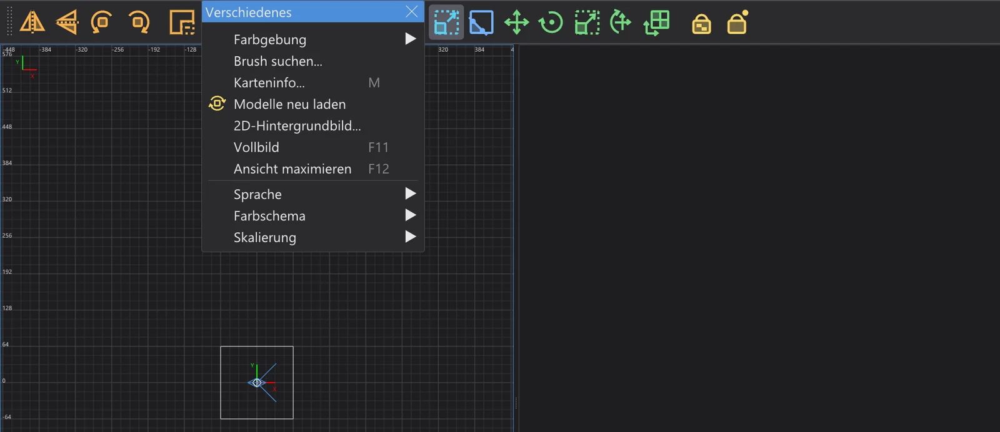
Ein Klick auf die gestrichelte Linie oben in einem Menü reißt es zu einem Fenster ab, das offen bleibt (Abtrennbare Menüs auf der Seite Anordnung). Verschiedenes > Vollbild (F11) füllt den Bildschirm, Ansicht maximieren (F12) vergrößert die Ansicht unter der Maus. Schrift der Ansichten wählt die Schrift der 2D- und Kamera-Ansichten, 2D-Hintergrundbild legt eine Bilddatei in die Grenzen der Auswahl in der aktiven 2D-Ansicht, zum Nachzeichnen. Die Plugins beschreibt die Seite Karten-Editor: Plugins, das Kompilieren mit q3map2 die Seite Karten-Editor: Karte bauen.